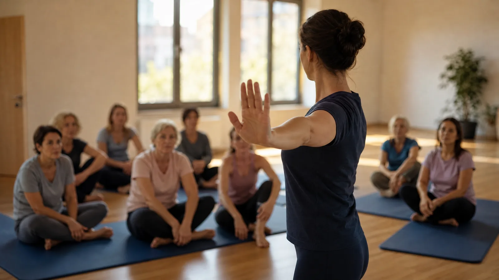

„Kann ich mich damit verteidigen?“ Diese Frage steht für viele am Anfang, wenn sie über Kickboxen nachdenken. Manche haben etwas Unangenehmes erlebt, andere wollen sich auf dem Heimweg einfach sicherer fühlen. Die ehrliche Antwort ist unbequem: Kickboxen kann dir einiges mitgeben, aber es ist kein Selbstverteidigungskurs. Niemand kann dir versprechen, dass du nach ein paar Monaten Training einen Angriff abwehrst.
Hier geht es deshalb der Reihe nach: worin sich ein Kampf auf der Matte von einem Angriff im Alltag unterscheidet, von wem Gewalt in Deutschland tatsächlich ausgeht, was die Polizei empfiehlt und was Studien zu Selbstbehauptungs- und Selbstverteidigungskursen zeigen, vor allem für Frauen. Erst danach schauen wir, was Kickboxen beiträgt, was es nicht abdeckt und was du in Notwehr darfst. Wenn dich der Einstieg ins Training selbst interessiert, findest du alles dazu in unserem Artikel Kickboxen für Frauen: Einstieg und Training.
Wichtig vorweg: Dieser Artikel fasst Studien und Empfehlungen der Polizei zusammen. Er ist kein Sicherheitsversprechen und keine Rechtsberatung. Wenn du in Gefahr bist, ruf die Polizei: in Deutschland 110, in Österreich 133, in der Schweiz 117. Der Euro-Notruf 112 funktioniert in allen drei Ländern.
Wenn du Gewalt erlebt hast: Das Hilfetelefon „Gewalt gegen Frauen“ ist unter 116 016 an 365 Tagen im Jahr rund um die Uhr erreichbar, auch für Angehörige und Freundinnen.
Ist Kickboxen eine gute Selbstverteidigung?
Zum Teil. Kickboxen bringt dir Fähigkeiten bei, die in einer Notsituation nützen können: Schläge und Tritte, die du hunderte Male wiederholt hast, mehr Kondition und die Erfahrung, unter Druck weiterzuarbeiten. Selbstverteidigung ist aber mehr als Technik. Sie beginnt lange vor dem ersten Kontakt, mit Aufmerksamkeit, Abstand und einer klaren Grenze. Und sie endet im besten Fall damit, dass du weg bist.
Die Polizeiliche Kriminalprävention unterscheidet deshalb zwei Arten von Kursen. In Selbstbehauptungskursen geht es darum, „sich der eigenen Kraft und Stärke bewusst zu werden und selbstsicher aufzutreten“. In Kursen zur Selbstverteidigung werden „körperliche Techniken für den Ernstfall erlernt“. Kickboxen gehört in keine der beiden Schubladen. Es ist ein Wettkampfsport, gebaut für den Ring. Das macht es für die Selbstverteidigung nicht wertlos. Die sinnvollere Frage lautet aber: Welche Bausteine bekomme ich im Training, und welche fehlen mir?
Was Kickboxen für die Selbstverteidigung abdeckt und was nicht
Eigene Darstellung. Grundlage: WAKO Rules, Kapitel 10 (K1 Style), Art. 5, Fassung vom 04.05.2022; Empfehlungen von polizei-beratung.de; Studien von Ouergui und Kollegen (2014) und Moore und Kollegen (2020), Quellen unten. Stand: November 2026.
Was ist der Unterschied zwischen Kampfsport und Selbstverteidigung?
Kampfsport hat Regeln, die dich schützen, Selbstverteidigung hat keine. Im Wettkampf wisst ihr beide, wann es losgeht. Ihr seid ungefähr gleich schwer, tragt Handschuhe und Schutzausrüstung, und ein Ringrichter greift ein, sobald es gefährlich wird. Bei einem Angriff im Alltag fehlt all das.
Wie eng der Rahmen im Sport ist, zeigt das Regelwerk des Kickbox-Weltverbands WAKO. Im K1-Stil sind Treffer am Kopf und am Rumpf nur von vorn und von der Seite erlaubt, dazu Tritte und Knie gegen die Beine. Verboten sind unter anderem Angriffe auf Kehle, Hals, Hinterkopf, Nieren und Rücken sowie Tiefschläge. Ringen, Werfen und das Festhalten des Beins sind ebenfalls untersagt. Erlaubt sind lediglich Fußfeger auf Knöchelhöhe sowie kurzes Clinchen und Halten von Nacken oder Schultern für einen Kniestoß. Wer fällt oder schon am Boden ist, sobald also eine Hand oder ein Knie den Boden berührt, darf nicht mehr angegriffen werden. Geschlagen wird mit 10-Unzen-Handschuhen, dazu kommen Kopfschutz, Mundschutz, Tiefschutz und Schienbeinschoner, bei Frauen auch ein Brustschutz.
Ein Detail zeigt den Unterschied besonders deutlich. Für den Fall, dass du dich gegen einen Angriff konsequent wehren musst, nennt die Polizei unter anderem Tritte gegen Schienbein oder Knie. Im K1-Regelwerk der WAKO sind Front- und Seitwärtstritte gegen die Vorderseite von Oberschenkel, Knie und Schienbein verboten. Dass ein Sport solche Techniken ausklammert, ist richtig, denn er soll niemanden dauerhaft verletzen. Für die Selbstverteidigung heißt es aber: Was im Ring verboten ist, übst du selten.
Kickboxen im Ring und ein Angriff im Alltag
| Kickboxen im Wettkampf (WAKO, K1) | Angriff im Alltag | |
|---|---|---|
| Beginn | Mit dem Gong, beide sind bereit | Ohne Ankündigung, du weißt nicht, was kommt |
| Gegenüber | Eine Person, gleiche Gewichtsklasse | Unbekannt, manchmal mehrere, oft jemand, den du kennst |
| Ausrüstung | 10-Unzen-Handschuhe, Kopfschutz, Mundschutz, Tiefschutz, Schienbeinschoner | Alltagskleidung; Gegenstände oder Waffen sind möglich |
| Erlaubte Ziele | Kopf und Rumpf von vorn und seitlich, Beine; Kehle, Hinterkopf, Nieren, Rücken, Tiefschlag verboten | Keine Regeln |
| Greifen und Boden | Ringen, Werfen, Bein festhalten verboten; wer am Boden ist, darf nicht angegriffen werden | Festhalten, Würgen, Zu-Boden-Drücken kommen vor |
| Wer schützt dich | Ringrichter, Rundenzeit, medizinisches Team | Niemand, außer Umstehende helfen |
| Ziel | Punkte oder K. o. innerhalb der Runden | Wegkommen und Hilfe holen |
| Rechtlicher Rahmen | Wettkampfregeln des Verbands | Notwehr nach § 32 StGB: nur die Verteidigung, die erforderlich ist |
Quellen: WAKO Rules, Version 2 vom 04.05.2022, Kapitel 1 (Gewichtsklassen, medizinisches Team) und Kapitel 10 (K1 Style), Art. 2, 3 und 5; Festhalten und Würgen als typische Situationen nach dem Studienprotokoll von Senn und Kollegen (2013); Täter aus dem Umfeld nach polizei-beratung.de und der Dunkelfeldstudie LeSuBiA; § 32 StGB nach gesetze-im-internet.de. Stand: November 2026.
Von wem geht Gewalt in Deutschland tatsächlich aus?
Oft nicht von dem Fremden, an den viele bei Selbstverteidigung zuerst denken. Die Dunkelfeldstudie „Lebenssituation, Sicherheit und Belastung im Alltag“ (LeSuBiA) des Bundeskriminalamts hat zwischen Juli 2023 und Januar 2025 insgesamt 15.479 Menschen zwischen 16 und 85 Jahren nach ihren Gewalterfahrungen gefragt. Das BKA nennt sie eine der ersten repräsentativen Studien in Deutschland mit hoher Fallzahl, die Frauen und Männer gleichermaßen betrachtet.
Das Bild ist gemischt. Bei sexueller Belästigung waren die Täter über alle Befragten hinweg überwiegend fremde oder flüchtig bekannte Personen. Über ein Drittel der Frauen (34,7 %) hatte in den vergangenen fünf Jahren Belästigung ohne Körperkontakt erlebt, 14,5 % mit Körperkontakt. Bei sexuellen Übergriffen auf Frauen war dagegen am häufigsten der Ex-Partner der Täter (46,5 %). Körperliche Gewalt in der Partnerschaft erlebten in den letzten fünf Jahren Frauen und Männer etwa gleich oft, 5,2 und 6,1 %. Frauen trugen laut Studie aber mehr Verletzungen davon und schätzten die Lebensgefahr höher ein.
Was Frauen in Deutschland in fünf Jahren erlebt haben, und durch wen
Quelle: Bundeskriminalamt, Pressemitteilung zur Dunkelfeldstudie LeSuBiA vom 10.02.2026; 15.479 Befragte, Juli 2023 bis Januar 2025. Fünf-Jahres-Werte für Frauen. Stand: November 2026.
Die Polizeistatistik zeigt dasselbe Muster im Hellfeld. 2024 registrierte die Polizei 265.942 Opfer häuslicher Gewalt, ein neuer Höchststand; 70,4 % davon waren weiblich, bei Partnerschaftsgewalt rund 80 %. Und das ist nur, was angezeigt wird. Laut LeSuBiA liegen die Anzeigequoten bei den meisten Gewaltformen unter zehn Prozent, bei psychischer und körperlicher Gewalt in (Ex-)Partnerschaften sogar unter fünf Prozent. Gewalt im öffentlichen Raum gibt es natürlich auch: 2025 erfasste die Polizei 71.363 gefährliche und schwere Körperverletzungen auf Straßen, Wegen und Plätzen.
Für die Selbstverteidigung heißt das zweierlei. Gegen Belästigung unterwegs helfen vor allem Aufmerksamkeit, Abstand und eine laute, klare Reaktion. Gegen Gewalt durch Menschen, die du kennst, hilft zuerst, Grenzverletzungen früh als solche zu erkennen und ernst zu nehmen. Die Polizei nennt es ausdrücklich als Qualitätsmerkmal eines Kurses, dass er darauf eingeht, dass „viele Täter aus dem näheren sozialen Umfeld kommen“. Ein Low Kick ist darauf selten die erste Antwort. Wer Gewalt in der Beziehung erlebt, braucht vor allem Unterstützung von außen, etwa von einer Beratungsstelle oder dem Hilfetelefon unter 116 016, und keinen Kampfsport.
Was rät die Polizei, wenn eine Situation kippt?
Zuerst Abstand, Lautwerden und Hilfe holen; das Kämpfen steht am Ende. Auf ihrem Präventionsportal empfiehlt die Polizei, die Umgebung aufmerksam wahrzunehmen und auf das eigene Bauchgefühl zu hören. Wer eine Situation bedrohlich findet, soll sich so früh wie möglich entfernen und an einen sicheren Ort gehen, also die Straßenseite oder das U-Bahn-Abteil wechseln oder in einen Kiosk, ein Geschäft oder ein Restaurant gehen.
Zwei Tipps aus diesem Katalog sind besonders praktisch. Erstens: Sieze die Person, die dich bedrängt. Damit zeigst du Umstehenden, dass es sich nicht um einen privaten Streit handelt. Zweitens: Sprich Unbeteiligte direkt an, etwa mit „Hallo, Sie mit der grünen Jacke …“, beschreib die Situation und fordere Hilfe ein. In einer Notsituation rufst du die 110. Verbale Provokation und körperliche Konfrontation solltest du vermeiden, so gut es geht.
Fünf Stufen: Was die Polizei in einer bedrohlichen Situation empfiehlt
Eigene Darstellung nach polizei-beratung.de: Gewalt unterwegs und Verhalten bei einem Angriff, abgerufen im Oktober 2026. Die Reihenfolge ist eine Orientierung, keine feste Regel.
Erst wenn du eine Lage als besonders bedrohlich einschätzt, rät die Polizei: „Wehren Sie sich konsequent!“ Gemeint sind gezielte Schläge zum Gesicht, Tritte gegen Schienbein oder Knie und alles, was du greifen kannst, etwa Handtasche, Schlüsselbund oder ein Stuhl. Gleichzeitig betont sie, dass es keine pauschalen Verhaltensempfehlungen für jede Situation gibt. Du entscheidest selbst, welche Abwehr angebracht ist.
Von Pfefferspray, Messern und anderen Waffen rät die Polizei ausdrücklich ab. Sie können dir abgenommen und gegen dich verwendet werden, sie können eine Situation eskalieren lassen, und sie erschweren Helfern und Polizei zu erkennen, wer Täter und wer Opfer ist. Dazu kommt das Waffenrecht, das das Führen mancher Gegenstände verbietet oder von einer Erlaubnis abhängig macht. Als Alternative nennt die Polizei einen Schrillalarm, dessen lauter Ton Umstehende aufmerksam macht.
Was hilft Frauen nachweislich bei der Selbstverteidigung?
Am besten belegt sind Kurse, die mehr als Technik vermitteln: Risiken einschätzen, Gefahr ernst nehmen und sich laut und körperlich wehren. Eine große randomisierte Studie dazu stammt aus Kanada und erschien 2015 im New England Journal of Medicine.
Senn und Kollegen verteilten 893 Studentinnen im ersten Studienjahr an drei Universitäten per Los auf zwei Gruppen. Die eine Gruppe bekam eine kurze Sitzung mit Broschüren, wie es an den Hochschulen üblich war. Die andere durchlief ein Programm aus vier Einheiten zu je drei Stunden. Im Jahr danach lag das Risiko einer vollendeten Vergewaltigung in der Programmgruppe bei 5,2 %, in der Vergleichsgruppe bei 9,8 %. Das entspricht einer relativen Senkung um 46,3 %. Auch versuchte Vergewaltigungen waren seltener, 3,4 gegenüber 9,3 %.
Aufschlussreich ist, was in diesen zwölf Stunden passierte. Laut Studienprotokoll ging es in der ersten Einheit darum, Risiken durch Bekannte einzuschätzen. In der zweiten ging es um die inneren Hürden, eine Situation als gefährlich anzuerkennen und sich auch gegen einen Mann zu wehren, den man kennt. Erst die dritte Einheit drehte sich um Gegenwehr, verbal und körperlich, mit Techniken auf Basis von WenDo: eine Faust machen, laut werden, verletzliche Stellen erkennen, schlagen und treten, aber auch Handgelenk- und Würgegriffe lösen und unter jemandem herauskommen, der dich mit seinem Gewicht festhält. Die vierte Einheit beschäftigte sich mit Beziehungen, Sexualität und eigenen Grenzen.
Zwölf Stunden, davon drei für Gegenwehr: Programm und Ergebnis
Quellen: Senn und Kollegen (2015), New England Journal of Medicine, PMID 26061837; Inhalte der Einheiten nach dem Studienprotokoll, Senn und Kollegen (2013), BMC Women’s Health, PMID 23702221.
Der Effekt hielt an. Über zwei Jahre senkte das Programm laut Folgeauswertung das Risiko von vollendeten und versuchten Vergewaltigungen, versuchter Nötigung und ungewolltem sexuellem Kontakt um 30 bis 64 %. Die Teilnehmerinnen trauten sich mehr Gegenwehr zu und kannten wirksame Strategien besser, also entschiedenes verbales und körperliches Wehren. Als fünf Universitäten das Programm später selbst anboten, ohne die strengen Bedingungen einer randomisierten Studie, lag das Risiko einer vollendeten Vergewaltigung nach sechs Monaten um 57,3 % unter dem der Vergleichsgruppe. Verglichen wurde dort mit Studentinnen, die sich angemeldet, aber nicht teilgenommen hatten.
Ähnliche Ergebnisse gibt es aus ganz anderen Lebenswelten. In Nairobi bekamen Schülerinnen eines Armenviertels einen sechswöchigen Selbstverteidigungskurs (Sinclair und Kollegen, 2013). Neun von zehn Betroffenen waren vorher von Bekannten angegriffen worden, vom Freund über Verwandte bis zum Nachbarn. In der Kursgruppe fiel der Anteil der Mädchen mit einem sexuellen Übergriff von 24,6 % vor dem Kurs auf 9,2 % bei der Nachbefragung zehn Monate später. In der Vergleichsgruppe blieb er nahezu gleich (24,2 und 23,1 %). Die Gruppen wurden allerdings nach Schulen eingeteilt, nicht einzeln ausgelost. Eine Übersichtsarbeit über 19 Veröffentlichungen aus den Jahren 2011 bis 2023 (Johnson und Cole, 2025) spricht von starker Evidenz, dass Teilnehmerinnen solcher Kurse seltener versuchte und vollendete Vergewaltigungen erleben und weniger Symptome einer posttraumatischen Belastungsstörung berichten.
Nicht jedes Programm wirkt gleich. Eine Metaanalyse über 80 Studien zu Präventionsprogrammen an US-Hochschulen (Kettrey und Kollegen, 2023) fand insgesamt nur einen kleinen Effekt auf erlebte Gewalt. Nach einer Debatte in der Fachzeitschrift stellten die Autorinnen und Autoren klar, dass ihre Analyse keine Auswertung von Empowerment-Selbstverteidigung im Sinne der oben genannten Kurse ist. Programme unterscheiden sich also stark: Eine kurze Informationsveranstaltung ist etwas anderes als zwölf Stunden Üben.
Auch zur Gegenwehr selbst gibt es Daten. Eine Auswertung der US-Opferbefragung NCVS aus den Jahren 1992 bis 2002 (Tark und Kleck, 2014) ergab, dass die meisten Formen von Selbstschutz, ob körperlich oder nicht, das Risiko einer vollendeten Vergewaltigung senkten. Das Risiko zusätzlicher Verletzungen stieg dabei nicht nennenswert. Ob und wie sich jemand wehrt, lässt sich in einer echten Situation aber nicht planen.
Denn nicht jeder Körper reagiert in Gefahr mit Kampf oder Flucht. In einer Untersuchung an einer Stockholmer Notfallambulanz für Frauen nach sexueller Gewalt (Möller und Kollegen, 2017) berichteten 70 % von 298 Frauen von einer deutlichen Erstarrung während des Übergriffs, 48 % von einer extremen. Diese sogenannte tonische Immobilität ist eine unwillkürliche Reaktion. Wer erstarrt, hat nichts falsch gemacht. Die Verantwortung liegt immer beim Täter.
Was bringt Kickboxen für die Selbstverteidigung?
Kickboxen liefert körperliche Grundlagen, auf denen ein Selbstverteidigungskurs aufbauen kann. Manche davon sind durch Studien gestützt, andere beruhen auf Erfahrung aus dem Training. Wir sagen jeweils dazu, was davon belegt ist.
Kondition: Auch Weglaufen braucht Luft
Die erste Empfehlung der Polizei lautet, sich zu entfernen. Dafür brauchst du Ausdauer und Antritt. In einer kleinen randomisierten Studie (Ouergui und Kollegen, 2014) trainierten 15 Teilnehmende fünf Wochen lang dreimal pro Woche rund eine Stunde Kickboxen, 15 weitere bildeten die Kontrollgruppe. Danach waren in der Kickbox-Gruppe die Schnellkraft des Oberkörpers, die aerobe Leistung, die anaerobe Fitness, die Beweglichkeit sowie Schnelligkeit und Gewandtheit besser. Die Körperzusammensetzung und die Sprungkraft veränderten sich nicht. Fünf Wochen sind wenig, und 30 Menschen sind keine große Stichprobe. Die Richtung ist trotzdem plausibel.
Schläge und Tritte, die unter Druck noch funktionieren
Die Polizei weist darauf hin, dass alle körperlichen Techniken „lange geübt werden sollten“, damit sie in einer bedrohlichen Situation sicher funktionieren. Wie sehr Angst die Ausführung verschlechtert, hat eine Studie aus Amsterdam mit Polizeibeamten gezeigt (Renden und Kollegen, 2014). 13 Beamte sollten treten, blocken oder einen Angreifer festhalten, der sie mit einem Messer attackierte: einmal mit einem Gummimesser, einmal mit einem Messer, das Stromschläge abgeben konnte. Unter dieser Angst wurde die Leistung schlechter: Die Beamten reagierten hastiger, lehnten sich beim Tritt weiter nach hinten und duckten sich beim Blocken weg. Sie wichen der Bedrohung also eher aus, statt die Technik sauber auszuführen.
Eine Folgestudie (Renden und Kollegen, 2017) testete ein anderes Training. Die Beamten übten komplette Gewaltsituationen und nicht nur einzelne Techniken. Dazu gehörte auch, vor dem ersten Kontakt zu kommunizieren, die Umgebung im Blick zu behalten und Angriffe vorauszusehen. Danach schnitten sie in realitätsnahen Szenarien besser ab als nach dem üblichen Training. Vorsichtig gelesen heißt das für dich: Techniken, die oft und unter Belastung geübt werden, halten unter Stress eher. Kickboxtraining an Pratzen und im Sparring bietet viele solcher Wiederholungen, aber keine Alltagsszenarien. Ob sich das auf einen echten Angriff überträgt, hat unseres Wissens noch niemand gemessen.
Distanzgefühl
Aus der Trainingspraxis: Wer eine Weile Kickboxen trainiert, bekommt ein ziemlich genaues Gefühl dafür, wie weit ein Arm und wie weit ein Bein reicht. Man lernt, einen halben Schritt zurückzunehmen, bevor etwas trifft, und merkt früher, wenn jemand zu nah kommt. Das passt zur ersten Regel der Polizei, Abstand zu halten. Eine Studie, die genau diesen Effekt für den Alltag belegt, kennen wir nicht. Wir halten ihn trotzdem für einen der nützlichsten Nebeneffekte des Trainings.
Selbstvertrauen, mit einer Einschränkung
Eine Metaanalyse von Moore und Kollegen (2020) hat 14 Studien zu Kampfkunsttraining und psychischer Gesundheit ausgewertet. Das Training hatte einen kleinen positiven Effekt auf das Wohlbefinden (d = 0,35) und einen mittleren, aber unsicher geschätzten Effekt auf nach innen gerichtete Beschwerden wie Ängstlichkeit und gedrückte Stimmung (d = 0,62). Aggressiver machte es nicht (d = 0,02, kein signifikanter Effekt). Mehr dazu, wie Training bei Dauerbelastung wirkt, steht in unserem Artikel Sport gegen chronischen Stress.
Die Einschränkung: Selbstvertrauen ist nicht dasselbe wie Sicherheit. Es kann dir helfen, laut „Stopp“ zu sagen und eine Grenze zu halten. Es schadet dir, wenn es dich dazu bringt, eine Situation zu suchen, der du hättest ausweichen können.
Was deckt Kickboxen nicht ab?
Alles, was der Wettkampf verbietet oder nicht vorsieht. Das ist kein Fehler des Sports, sondern sein Zweck. Für die Selbstverteidigung sind es aber genau die Lücken, die du kennen solltest.
Griffe und Boden
Im K1-Regelwerk der WAKO sind Ringen, Werfen und das Festhalten des Beins verboten, und wer am Boden liegt, darf nicht angegriffen werden. Das kanadische Programm von Senn hat dagegen gezielt geübt, Handgelenk- und Würgegriffe zu lösen und unter jemandem herauszukommen, der dich mit seinem Gewicht festhält. Laut Studienprotokoll sind das die häufigeren Situationen bei Übergriffen durch Bekannte. Kampfsportarten wie BJJ, Judo oder Ringen trainieren das Greifen und den Boden intensiv. Im BJJ-Wettkampf nach den Regeln der IBJJF sind dafür Schläge und Tritte verboten, es ist also das Spiegelbild zum Kickboxen.
Waffen
Im Kickboxen kommen Waffen nicht vor. Selbst Polizeibeamte führten in der oben beschriebenen Studie ihre Abwehrtechniken schlechter aus, sobald das Übungsmesser Stromschläge gab. Es bleibt bei der Empfehlung der Polizei: Abstand, weggehen, 110.
Überraschung und mehrere Angreifer
Im Ring stehst du genau einer Person gegenüber, und der Kampf beginnt mit dem Gong. Ein Angriff kündigt sich nicht an, und es können mehrere Menschen beteiligt sein. Beides lässt sich im normalen Kickboxtraining kaum üben. Dazu kommt die Umgebung: Asphalt statt Matte, Winterjacke statt Shirt, Treppe, Dunkelheit, ein Rucksack auf dem Rücken.
Was du stattdessen ergänzen kannst
Für das Erkennen und Entschärfen von Situationen ist ein Selbstbehauptungskurs die direkteste Ergänzung. Für körperliche Techniken im Ernstfall gibt es Selbstverteidigungskurse, etwa auf Basis von WenDo wie im kanadischen Programm. Wer das Greifen und den Boden lernen will, ist bei BJJ, Judo oder Ringen richtig. Welche Kampfsportart grundsätzlich zu dir passt, vergleicht unser Artikel Kampfsportarten im Vergleich. Die Unterschiede zwischen den beiden Stand-Kampfsportarten stehen in Muay Thai vs. Kickboxen.
Was darfst du in Notwehr? (§ 32 StGB)
Du darfst dich verteidigen, aber nur so weit, wie es nötig ist. Der Gesetzestext ist kurz: „Wer eine Tat begeht, die durch Notwehr geboten ist, handelt nicht rechtswidrig.“ Und weiter: „Notwehr ist die Verteidigung, die erforderlich ist, um einen gegenwärtigen rechtswidrigen Angriff von sich oder einem anderen abzuwenden.“ Das Recht gilt also auch, wenn du jemand anderem hilfst.
Für den Fall, dass jemand aus Angst zu weit geht, gibt es § 33 StGB: „Überschreitet der Täter die Grenzen der Notwehr aus Verwirrung, Furcht oder Schrecken, so wird er nicht bestraft.“ Mit „Täter“ ist hier die Person gemeint, die sich verteidigt. Ob eine Verteidigung im konkreten Fall erforderlich war, beurteilen im Zweifel Staatsanwaltschaft und Gericht. Das können und wollen wir hier nicht für dich einschätzen. Dieser Abschnitt ist keine Rechtsberatung.
In Österreich ist die Notwehr in § 3 StGB geregelt. Dort ist von der Verteidigung die Rede, „die notwendig ist, um einen gegenwärtigen oder unmittelbar drohenden rechtswidrigen Angriff“ abzuwehren, und von Grenzen, wenn nur ein geringer Nachteil droht. In der Schweiz regelt Art. 15 StGB die Notwehr. Wer in einem dieser Länder lebt, sollte sich im Zweifel dort beraten lassen.
Die Empfehlungen der Polizei haben hier einen zusätzlichen Vorteil. Wer sich früh entfernt und Hilfe holt, muss sich hinterher nicht fragen, ob die eigene Verteidigung zu weit ging.
Was tust du, wenn jemand anderes angegriffen wird?
Hilf, ohne dich selbst in Gefahr zu bringen. Die Sorge, dass ohnehin niemand eingreift, ist oft unbegründet. Eine Auswertung von 219 Konflikten im öffentlichen Raum, die Überwachungskameras in Großbritannien, den Niederlanden und Südafrika aufgezeichnet hatten (Philpot und Kollegen, 2020), ergab: In neun von zehn Fällen tat mindestens eine umstehende Person etwas, um zu helfen, meistens mehrere. Je mehr Menschen dabei waren, desto wahrscheinlicher griff jemand ein.
Das gilt nicht überall. Bei 43 Raubüberfällen auf Geschäfte, bei denen weniger Menschen anwesend und häufiger Waffen im Spiel waren, halfen Umstehende nur in 35 % der Fälle (Lindegaard und Kollegen, 2026). Wir halten das für nachvollziehbar: Wenn Waffen im Spiel sind, ist Zurückhaltung kein Versagen.
Die Polizei fasst Zivilcourage in ihrer „Aktion-tu-was“ in sechs Regeln zusammen:
- Hilf, aber bring dich nicht in Gefahr.
- Ruf die Polizei unter 110.
- Bitte andere um Mithilfe. Sprich Menschen direkt an, damit sich niemand auf andere verlässt.
- Präg dir Tätermerkmale ein.
- Kümmere dich um Opfer.
- Sag als Zeuge aus.
Rechtlich verlangt § 323c StGB Hilfe dort, wo sie erforderlich und zumutbar ist, „insbesondere ohne erhebliche eigene Gefahr“. Niemand erwartet von dir, dass du dich zwischen zwei Schläger wirfst. Ein Notruf, ein lauter Satz und andere Menschen, die du dazuholst, helfen oft schon viel.
Welche Kampfsportart ist die beste für Selbstverteidigung?
Eine Studie, die Kampfsportarten danach vergleicht, wie gut sie Menschen im Alltag schützen, ist uns nicht bekannt. Vergleichen lässt sich nur, was jede Disziplin trainiert und was sie auslässt. Kickboxen, Muay Thai und Boxen trainieren den Kampf im Stand, BJJ, Judo und Ringen das Greifen und den Boden. Selbstbehauptungskurse trainieren das, was vor dem ersten Kontakt passiert, und Selbstverteidigungskurse verbinden je nach Anbieter einfache Techniken mit Situationstraining.
Wenn Sicherheit dein Hauptziel ist, ist ein guter Selbstbehauptungs- oder Selbstverteidigungskurs der direktere Weg. Die Studien oben zeigen Wirkung nach zwölf Stunden beziehungsweise sechs Wochen. Wenn du einen Sport suchst, den du über Jahre machst und der dich fitter macht, ist Kickboxen eine gute Wahl. Beides schließt sich nicht aus. Eine sinnvolle Reihenfolge ist zum Beispiel: erst ein Kurs, danach ein Kampfsport, in dem du Schläge, Tritte und Kondition über lange Zeit übst. Dass körperliche Techniken lange geübt werden sollten, betont auch die Polizei.
Woran erkennst du einen seriösen Selbstverteidigungskurs?
Die Polizei nennt auf ihrem Präventionsportal eine Reihe von Fragen, mit denen du Angebote prüfen kannst. Wir haben sie leicht gekürzt:
- Arbeitet der Anbieter mit Fachleuten örtlicher Hilfestellen zusammen?
- Geht der Kurs darauf ein, dass viele Täter aus dem näheren sozialen Umfeld kommen? Ein guter Kurs richtet seine Schwerpunkte an den realen Verhältnissen aus.
- Werden nur körperliche Widerstandsformen gezeigt? Dann handelt es sich um Techniken, die lange geübt werden müssen.
- Gibt es Rollenspiele mit Überraschungsangriffen? Sie können Ängste auslösen. Mitmachen sollte nur, wer will.
- Schürt der Anbieter Ängste mit steigender Kriminalität und Überfällen? Laut Polizei handelt es sich dabei häufig um unseriöse Werbestrategien.
- Haben die Trainerinnen und Trainer eine fachliche Ausbildung und sozialpädagogisches Wissen?
- Wirbt der Anbieter mit der Polizei? Frag bei deiner nächsten Polizeidienststelle nach, ob es eine Zusammenarbeit gibt.

Ein Kurs, der dir Sicherheit garantiert, verspricht zu viel. Das kanadische Programm aus der NEJM-Studie umfasste zwölf Stunden. Es ging um Bekannte und Partner, nicht nur um den Fremden im Park, und die Stimme wurde genauso geübt wie die Faust.
Was sieht man in der Halle immer wieder?
Die folgenden Punkte sind allgemeine Hinweise aus der Trainingspraxis, keine Studienergebnisse:
- Zwei Minuten an den Pratzen sind anstrengender, als sie aussehen. Am Anfang außer Atem zu sein, ist normal. Die Ausdauer wächst mit regelmäßigem Training.
- Beim ersten leichten Kontakt die Augen zu schließen oder den Kopf wegzudrehen, ist eine typische Schreckreaktion. Sie legt sich mit Zeit und kontrolliertem Partnertraining, nicht in einer Woche. Sie ähnelt dem Ausweichen, das die Studie mit den Polizeibeamten unter Angst gemessen hat.
- Mit regelmäßigem Training verändert sich oft die Haltung: aufrechter, ruhiger, mit mehr Abstand zum Gegenüber. Ob das im Alltag schützt, ist nicht belegt, und wir behaupten es nicht.
- Wenn du nach einem schlimmen Erlebnis mit Kampfsport anfangen willst, ist ein Selbstbehauptungskurs eine sinnvolle Ergänzung. Geht es um Gewalt im eigenen Umfeld, ist der erste Schritt eine Beratungsstelle, zum Beispiel das Hilfetelefon unter 116 016.
Das Wichtigste in vier Sätzen
Kickboxen ist ein Sport mit Regeln, Handschuhen und Ringrichter und kein Selbstverteidigungskurs, auch wenn Kondition, Technik unter Druck, Distanzgefühl und Selbstvertrauen in einer Notsituation nützen können. Gewalt geht in Deutschland häufig von Menschen aus, die die Betroffenen kennen, deshalb beginnt Selbstschutz mit dem Erkennen von Grenzverletzungen, mit Abstand, Lautwerden und Hilfe holen, wie es auch die Polizei empfiehlt. Am besten belegt sind Kurse, die Risikoeinschätzung, Selbstbehauptung und körperliche Gegenwehr verbinden; in der NEJM-Studie senkten zwölf Stunden Training das Risiko einer vollendeten Vergewaltigung im Folgejahr relativ um fast die Hälfte. Wenn dir Sicherheit wichtig ist, kombiniere einen solchen Kurs mit einem Sport, den du über Jahre trainierst, und verteidige dich in Notwehr nur so weit, wie es erforderlich ist.